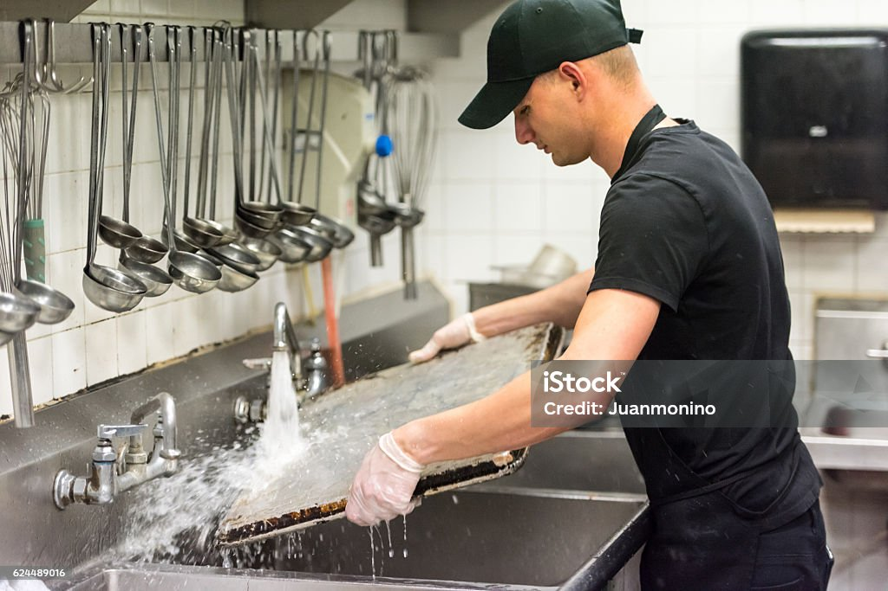

Chargement et déchargement de palettes dans un entrepôt.

Plongeur en restauration
Nettoyage de la vaisselle et maintien de la cuisine propre.
×
Manutentionnaire
J’ai travaillé 3 mois dans un entrepôt logistique, où j’étais chargé de
charger et décharger des palettes, organiser les marchandises, et respecter
les délais de livraison.
Pendant mes missions de plonge en restauration, j'étais responsable du nettoyage de la
vaisselle, des ustensiles et du matériel de cuisine.
J'assurais aussi l'hygiène et la propreté de l'espace de travail.